Shoutouts
Congrats to “The Shadow Brigade” for getting scuba certified!
Monday
Once I finished my tour of tokens I went to Mission Run club with “Hell yeah” and a bunch of others. For this run we ran up to Corona Heights and it sure did kick me in the ass. Part of it was self-inflicted since I sprinted up a decently sized hill to get there but even still I was not a happy camper. I wasn’t alone in that since many others on the run complained at the person who picked this route which made me feel a bit better.
I was solidly in the front of the pack until we got to the base of Corona heights at which point I decided to opt for speed walking rather than running and I fell to the middle. People were also impressed I did this with my backpack so I do think I gained a bit of aura at the end.
Tuesday
After I earned my daily bread I met up with “The Yogi” to continue our fashion tour. We started with Levi’s where I bought 3 new pairs of pants and a shirt. While I did walk away with a reasonable haul the road there was paved with trying on many different pants they didn’t quite make the cut. One thing I learned about myself throughout this is that really baggy pants aren’t the move for me. Big thanks again to “The Yogi” for being excellent at suggesting different things and having a good eye for what works and doesn’t.
I’m glad we got to support Levi’s since I know one of the people from there Daniel Lurie must be rather strapped for money right now. My $200 is probably going a long way towards funding another “What’s up San Francisco” post for his instagram account.
We then went to Target where I got some new shirts since a lot of mine got thrown out in Sunday's purge and a new running shirt. I really have to hand it to “The Yogi”, previously I wasn’t really thinking about running fashion all that much. But now we have a grand vision for a running shirt, some more running pants and even matching running shoes. SO MUCH FASHION! I guess she really did mean it when she said that when I stepped out of my house I would have no choice but to be fashionable.
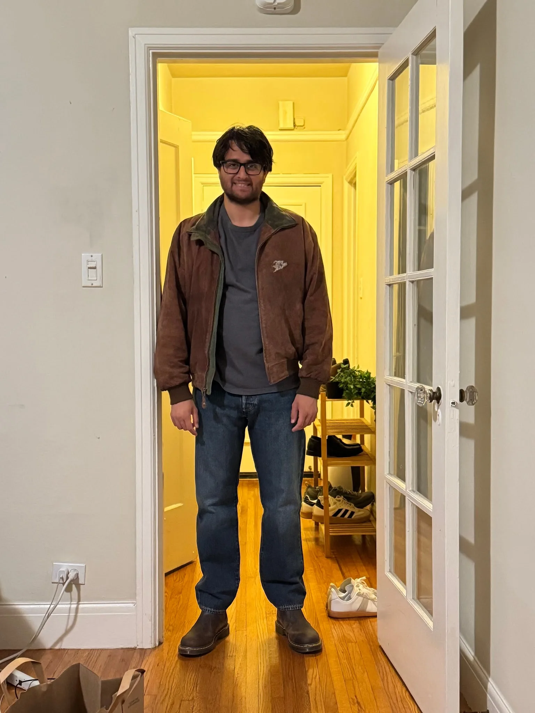
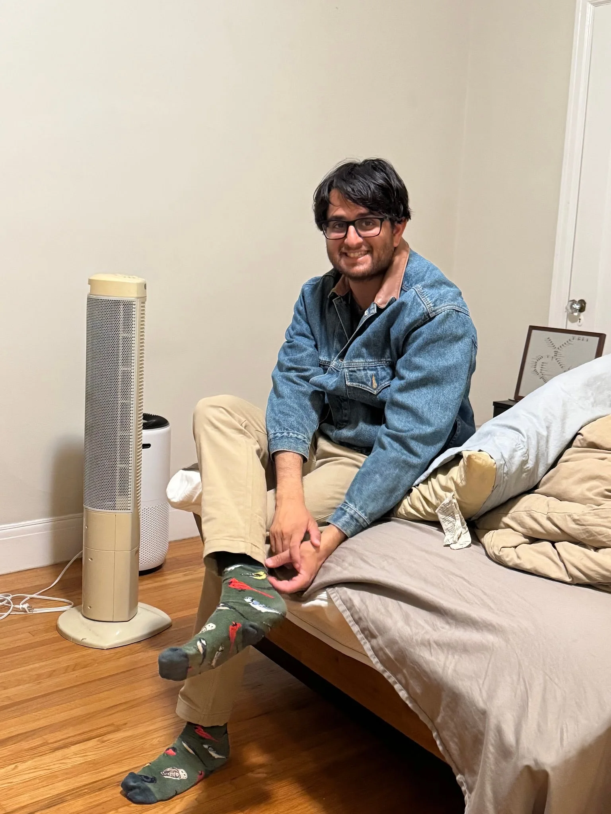
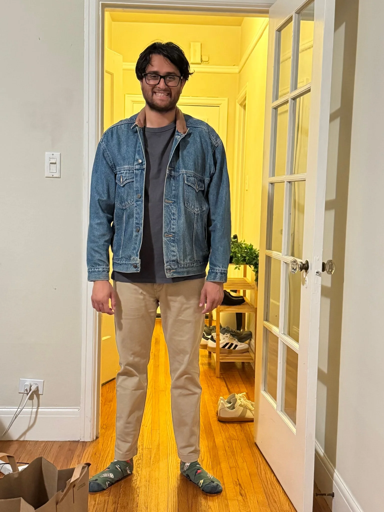
Wednesday
Once I shepherded all the little PRs into the great main branch in the cloud I caught up with an old friend I hadn’t seen in over a decade.
For a bit of context this guy is a family friend that I would hang out a lot with as a kid. We didn’t see each other every day because his family was I. Pleasanton and mine in Marin County but when we did oh boy were we inseparable.
When I was in high school his family moved back to Pakistan and I have never seen him since. A few months ago we started following each other on instagram and Strava which is how I learned he had moved to New York some time ago.
Last week I got a message from him saying he was in the neighborhood and wanted to meetup which we arranged for today.
We walked around for a while in the Mission and caught up on life. I learned that he moved back to the U.S in 2023 and has been working in the renewable energy field which got him very interested when I told him I was doing AI. He mentioned he had done a bunch of crazy adventures like going to the basecamp of K2 which is quite impressive. He mentioned he works as a personal trainer on the side and is very big into getting people to do rotational exercises. A lot of gym exercises focus on straight horizontal or up and down types but not a lot on rotations which he feels is important.
We stopped by a supermarket in the Mission where he wanted to buy some fruit. Since this was my first time seeing him in many years I thought I’d lay for them as a gesture of hospitality which he laughed off. This turned into a game where I tried to force myself to the credit card reader whom he pushed me away. He won and I joked that he should take me as a client and I’ll have graduated when I can force my way to the credit card reader. That little game took me back to being a child in a hilarious way to me.
He needed to head out shortly thereafter but we’ve made some plans to meet next week since he’ll be in SF until next Wednesday. I was really happy that the conversation flowed so smoothly. I’ve had some childhood friends who I’ve seen again and it’s been painfully awkward realizing we’ve drifted apart.
After I got back home I remembered that I live right next to a bar called Danny Coyle’s. Remember how I mentioned a couple weeks ago there was a girl on the bus who recognized me and I didn’t know who she was? Well that happened and I now have a goal of figuring out her name without letting her know I forgot hers. We didn’t talk too much on the bus but she mentioned she wanted to go to Danny Coyles on Wednesday for trivia but she couldn’t. This gave me a clue! Until now I was just thinking “maybe I’ll see her the next time on the bus”, but since the bar is right near me I can pop in and see if she’s there. If she’s with friends I can ask “How do you all know each other” and one of them will probably mention her name. It’s genius!
I popped my head in there about 10 minutes before trivia but she wasn’t there. I leave to head back to my place when out of the corner of my eye I see two people I went to high school with. By the time I realized I had already left the bar. About an hour later I decided to give it another try and this time I saw someone I went to college with. We talk for a bit and he says he just moved to the city a couple weeks ago after doing grad school in Toronto and being in Boston for awhile.
I may not have found the person I was expecting but I think what actually happened was even crazier!
Thursday
Once I finished uploading my soul to a company owned GCP bucket I got dinner with “The Menace” over at Beit Rima.
After a good catchup I went to bar night with “The Philosopher,” “The Awepartment,” “Thr Bartender,” “The Twitch streamer,” “That’s nuts” and a few old coworkers of “Thr Philosopher” and "The Awepartment”.
I got to learn a lot more about the office politics at play between both Verkada and Microsoft which I suppose was fascinating in its own sense. As a result of hanging out with the Canadians I’ve gotten to the point where I can pretend that I went to Waterloo and other Canadians will believe me. I’m not white at that point with Verkada and Microsoft yet but maybe if I get better I can say I used to work under the mythical Rob Cromwell joined him at Microsoft and am now counting the days until my stock vests.
Friday
After my shift as the code conduit I went to the Tacobell Cantina by Oracle park for a 5k hosted by “Breaking it down” also featuring “The Dentist” and one of “The Dentist’s” other friends. The idea is to run from the Tacobell by Oracle park to the one by Fisherman’s Wharf.
While I was waiting for people to come I talked with this one guy who is really into hosting dinner parties. I asked him if he had any tips and he said to pick a food that keeps it’s heat well because dinner may not start when you expect it to. Pork carnitas or some kind of braise are a good example of this. Something that involves slow cooking is a great choice according to him. Also 6-8 people is the ideal number of people for a dinner party apparently.
While on the run I learned from a friend of “The Dentist” that there is some instagram influencer who talks a lot about commuting from SF to Palo Alto which is funny to me. And apparently this person was on the run with us. She doesn’t know the person but she has seen reels from this person.
The run itself was pretty ok. I wore a 15 pound backpack which was more weight than I usually run with. It still wasn’t too bad. The worst part wasn’t the weight but the fact that my own pack rubbed against my back and left a bit of burn which would periodically irritate me. I didn’t finish the run though because I realized that for my next event the optimal strategy was to stop the run at Washington street and then head to “The Awepartment’s” place for movie night.
At movie night we have “The Awepartment,” “That’s nuts,” and a few of “The Awepartment’s” other friends. The movie itself was Goodwill Hunting; it was fine, a movie about embracing your potential, overcoming trauma and fear of failure and all that jazz. That’s all well and good but that was not what was on my mind. For me I have a tendency to fall asleep during movies which leads “The Awepartment” to try and spray me with a spray bottle and I wanted to get him to do that as a bit. Sadly this move I didn’t doze off at all during which was very surprising. I tried several times to feign it and all I got was a pity spray. At one point I kept my eyes half open and saw him get something he was carrying behind his back. I tried SO HARD to get him to use it and he only did it once. He said after the fact I had a terrible poker face and kept smiling all the time which gave away that I wasn’t really asleep. He also said that next time he had countermeasures prepared. BRING IT ON AWEPARTMENT. I will bring a pillow and I will withstand whatever you have to throw and earn my nap.
After the movie we went to Lily Coits where “That’s nuts” tried to get on the oyster eating leaderboard. They have a leaderboard there of the top 10 oyster eaters. The top person there ate 219 oysters over a single night which is insane. “That’s nuts” instead opted for a more reasonable 25 to try to get the 10th position there. Unfortunately we got there right near closing time and there was a miscommunication and she only got 24 meaning she couldn’t get her position. This inspired me though. I want to have an oyster eating competition with her next week to see who can eat more oysters. I want to see what’s stronger: her taste for oysters or my commitment to the bit. Are you ready “That’s nuts”? Next week, Lily coits be there or be square.
Saturday
The day begins with a hike organized by a friend of “Tightly knit” who I persuaded to come to Midnight runners at the beginning of the year with some McDonalds chicken tenders. There were a whole bunch of people there including “The Enabler,” “Tightly knit,” someone I met a few times at trash pickup and many others.
We did a hike around The Presidio up to The Golden Gate Bridge and out and around in a loop. It was quite chill and a good way to catch up with “The Enabler” and “Tightly knit”. “Tightly knit” is helping her dad with a business of selling pet beds and I’m wondering if I should get one for “Franklin” as a bit.
On the hike I met a guy who said he works as a philosopher. He said he does research on social interaction. I asked him exactly what he did but he didn’t really want to talk about it though. Someone asked him if this hike was helpful for his research and he said no. He may be a philosopher but he’s definitely not “The Philosopher".
After the hike I go to my last soccer game of the season with “The Big YT short,” “Always up for a disc-ussion,” “function(get_rid_of_cancer)” and the rest of team PTSD. Like us our final opponents also lost 0-5 so we may finally have opponents worthy of our surging girthy skill!
We get on the field and within a few minutes “The Big YT short” scores the first goal of the game putting us solidly in the lead!! That’s our captain!
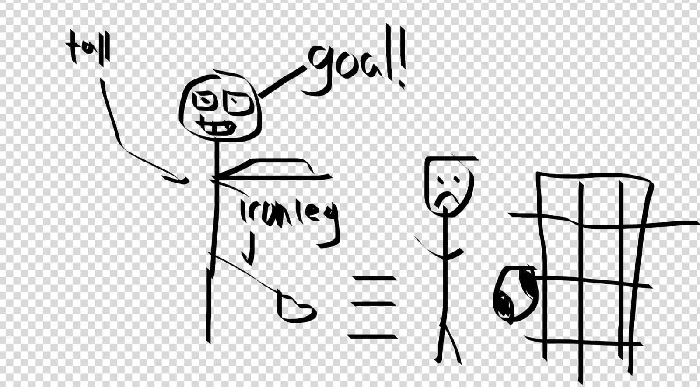
After that a drop in teammate who is also in the extended “The Big YT short” / Google friend group scored another goal that half bringing us up 2-0.
Big shoutout to all the other folks that got shots on goal as well. We had a lot more than we have in the past. It was incredibly exciting!!
One downside is that because the weather was so hot playing was pretty brutal so we subbed out reasonably often. The other side didn’t have many subs so one of our team members actually went over there and played with them in the second half. In the second half both teams scored another goal bringing the final total to 3-1.
Congrats Team PTSD!!!
Because this team was actually beginners like us (and unlike the rest of the teams we played in the league) we hit them up to try to set up scrimmage matches in the future. I think we could actually play some good games with them and get better!
On top of that we actually got food with the other team afterwards and hung out with them. They were all super nice and fun to talk to.
Later in the day I went to a music festival called Insidelands that was happening at a warehouse near Dogpatch. One of the friends of “The Awepartment” told me last night some of her friends were doing an amateur DJ night at this warehouse so I decided to come check it out.
I certainly wasn’t expecting to run into a really random cross section of people I’ve known through various means including two former coworkers, a friend from trash pickup who went on the Yosemite camping trip, someone else who went on the Yosemite camping trip, two people from trash pickup who I met years ago before almost everyone reading this newsletter but never quite became friends with and “The Awepartment” and some of his friends but they were more expected.
The DJs themselves were solid. I’m not super big into clubbing so I can’t say what the difference between an ok DJ and a really good DJ is but I felt like dancing the whole time so I would certainly call it enjoyable.
One of the more interesting parts of the party was that some people bought the warehouse on ZIllow and live there. One such person is the CEO of a weather modification startup that aims to use technology to modify the weather which is pretty interesting. I talked with her briefly and she seems like quite a cool person. On the wall was a weather device she designed for exactly this purpose. I didn’t get the chance to dig into a lot of the details of how it worked though. “The Awepartment” also conceded that the warehouse (warehome as they call it), is cooler than his apartment so I guess this makes this place “The Shock and Awepartment”. It’s ok though ultimately “The Awepartment” is still trash tales’ endorsed apartment of choice.
Sunday
I head over to “The Awepartment’s” early in the morning for coffee before a hike. I get there at 7AM which means between the 4AM, 6:45AM and now 7AM means this is the latest I’ve gone early in the morning for pre hike coffee. Well I don’t drink coffee so I take more of a supervisory role here. Also here is his high school friend who I just now met but quite like and hope to see more of him next week, and “That’s nuts” who we unsuccessfully try to get to come on the hike with us.
The three of us head out and meet one of “The Awepartment’s” other friends to go hike Montara mountain which is a lovely hike over in Pacifica. The hike itself is generally reasonable except for the heat near the bottom. For the first time in a while I actually needed water on a hike which usually never happens because I can just power through without a problem. I had the foresight before we left “The Awepartment’s” place to borrow a bottle of water from him and I drank it all which I haven’t needed to do since I went to Japan and hiked in 100 degree weather.
Also because I was rushing to leave my place this morning I didn’t bring my hiking shoes and just had my regular running shoes which made the slippery downhill quite annoying. I definitely lost my balance a couple of times and almost fell but thankfully nothing happened.
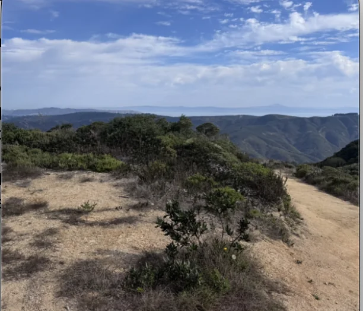
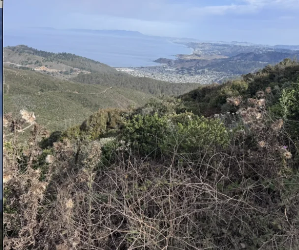
Later in the day I went to “The Fisherwoman’s” place to catch up with her and “Sustainably Fashionable” after their trips to Europe and New York respectively. “The Fisherwoman” got me some Turkish delights which I regrettably forgot about and need to come back for later.
Personal training progress for the week
The dot plots below show every exercise logged through 10/1/2026; later dates are excluded. The x-axis is time, the y-axis is logged weight, and dot size represents reps or logged time. Bodyweight sets appear on the BW baseline.
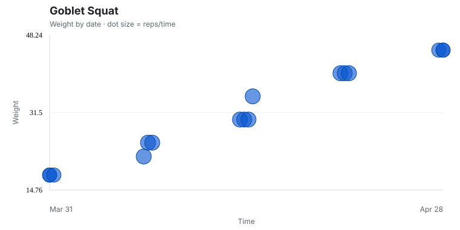


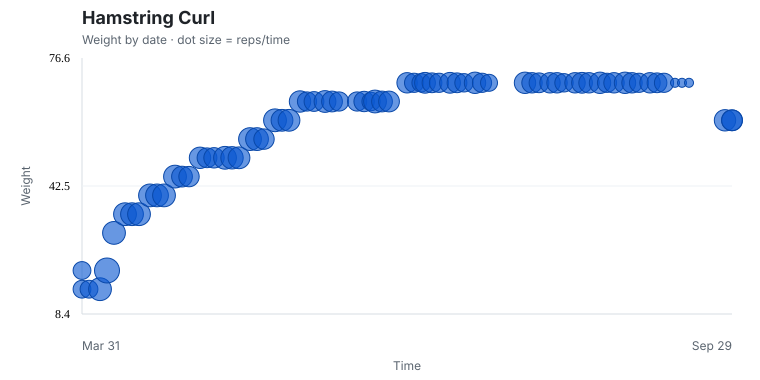

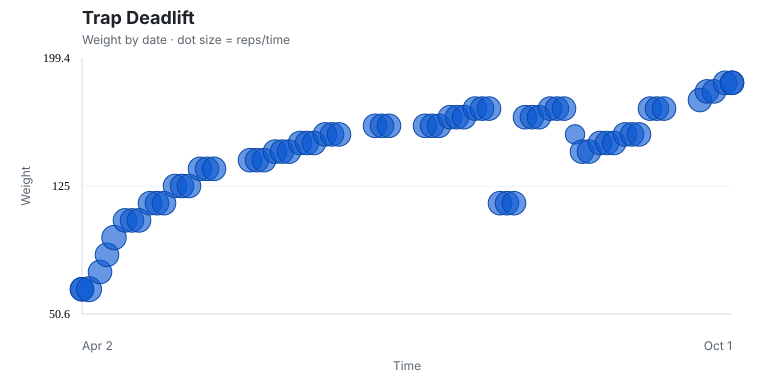
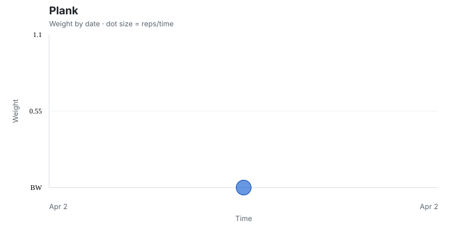
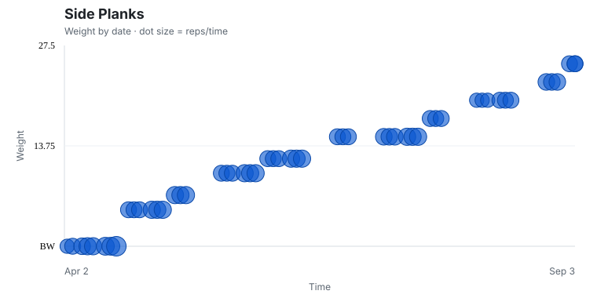
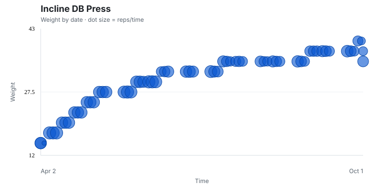
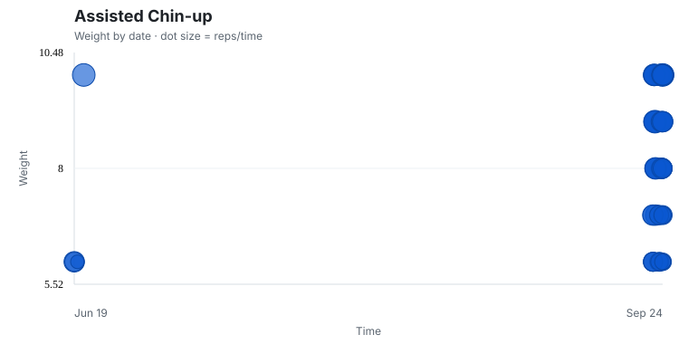
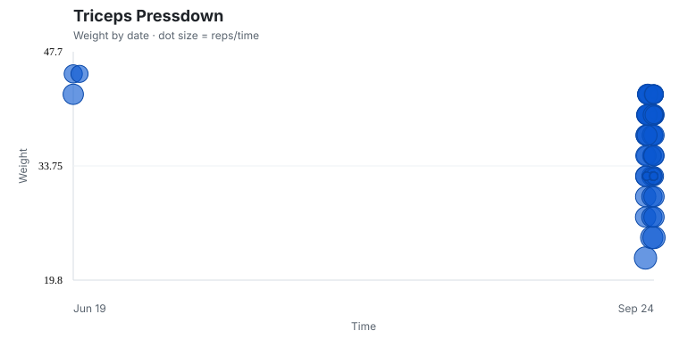
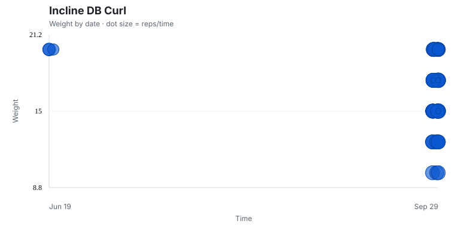
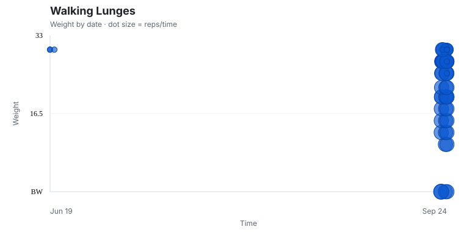
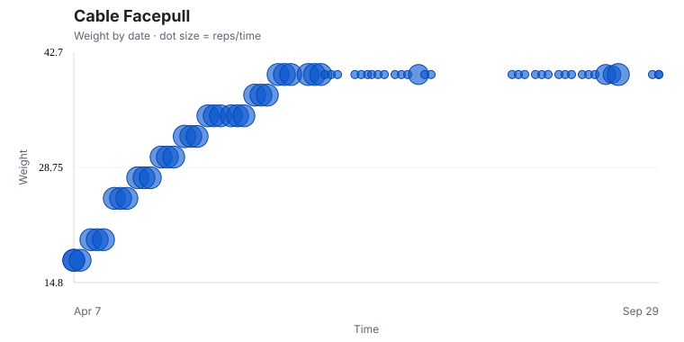
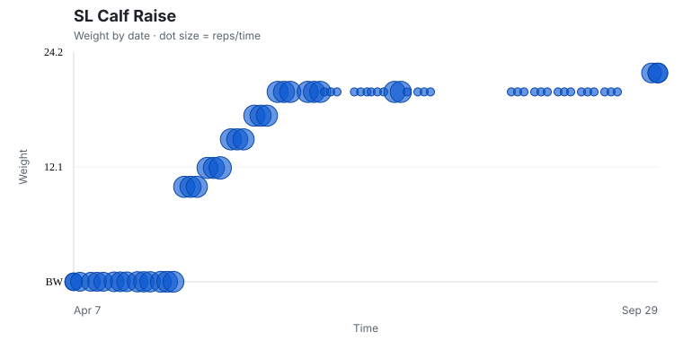
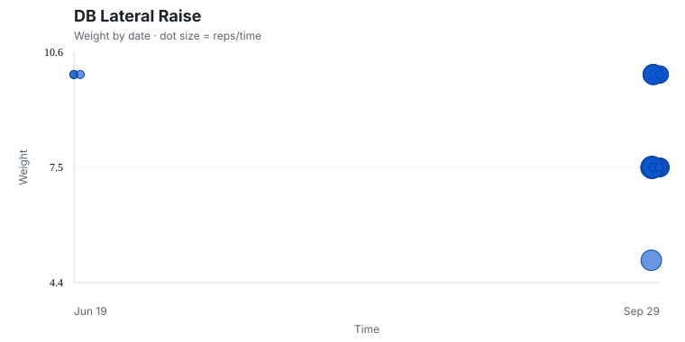


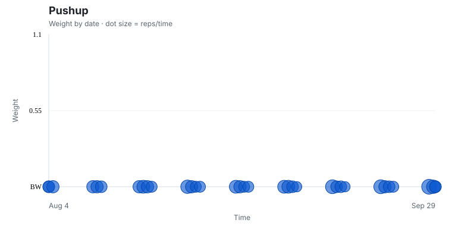
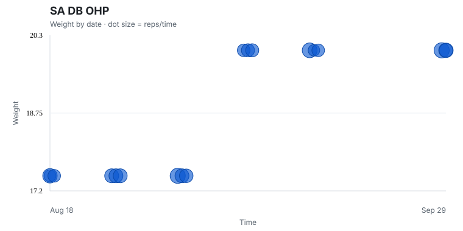
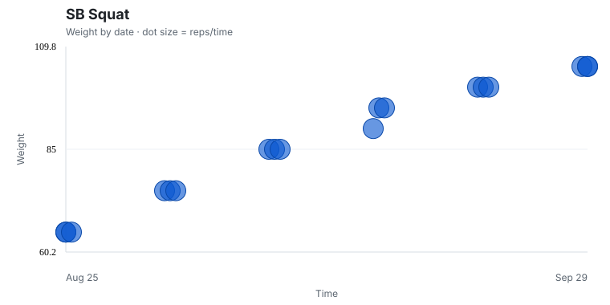

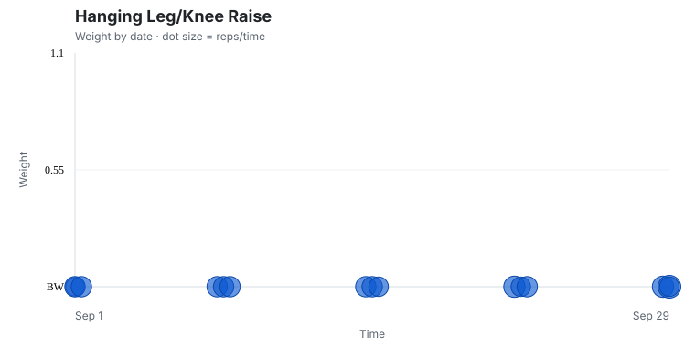
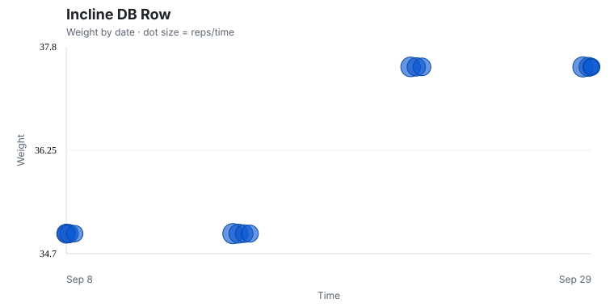
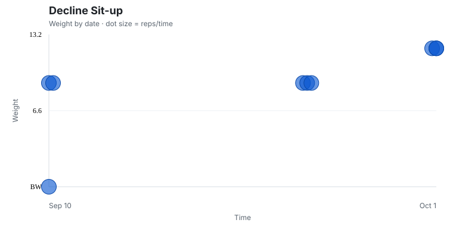